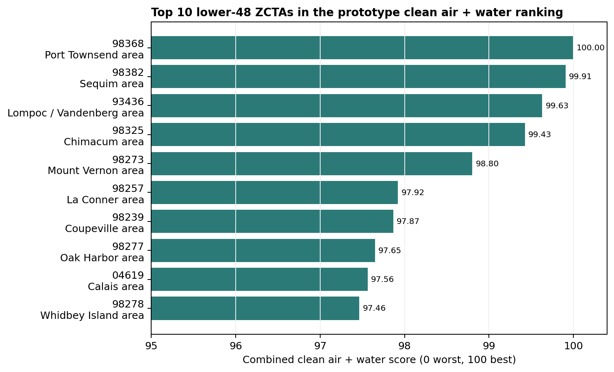

Ten ZIP Codes With Strong Clean Air and Water Signals
A prototype ranking of lower-48 ZCTAs using EPA AirData, public well-water observations, and Census geography.
What places in the United States appear to have some of the strongest combined signals for clean air and clean water?
I built a prototype ranking to explore that question. The analysis combines public air-quality observations from EPA AirData with public groundwater and well-water observations from the Water Quality Portal. The geography is Census ZCTAs, which are ZIP Code Tabulation Areas rather than exact USPS ZIP Code delivery areas.
This is not a drinking-water safety certification, and it is not a property-level environmental report. It is a screening exercise: a way to ask where public data suggest relatively strong clean-air and clean-water conditions, and where the data are too sparse to support a confident answer.
The top 10
Using the current lower-48 prototype, the top ten ZCTAs are:
- 98368, Port Townsend area, Washington - score 100.00
- 98382, Sequim area, Washington - score 99.91
- 93436, Lompoc / Vandenberg area, California - score 99.63
- 98325, Chimacum area, Washington - score 99.43
- 98273, Mount Vernon area, Washington - score 98.80
- 98257, La Conner area, Washington - score 97.92
- 98239, Coupeville area, Washington - score 97.87
- 98277, Oak Harbor area, Washington - score 97.65
- 04619, Calais area, Maine - score 97.56
- 98278, Whidbey Island area, Washington - score 97.46

The most obvious pattern is geographic. Many of the top-ranked ZCTAs are in coastal or island-influenced parts of Washington, with one ZCTA on the California Central Coast and one in coastal Maine.
What the score means
The score is scaled from 0 to 100 across lower-48 ZCTAs with complete air and water assignments. In this prototype, 100 means the strongest combined clean-air and clean-water signal, and 0 means the weakest combined signal among fully assigned ZCTAs.
The combined score uses 60 percent air quality and 40 percent water quality. The air component combines fine particulate matter, PM2.5, and ozone using 2019-2023 rolling annualized EPA AirData metrics. The water component combines arsenic, uranium, fluoride, and nitrate using 2019-2023 Water Quality Portal well-water observations and inverse-distance assignment from nearby monitoring wells to ZCTA centroids.
For the top-ranked ZCTA, 98368, the prototype estimates a combined score of 100.00, an air score of 88.91, and a water score of 99.56. Its estimated PM2.5 annual mean is 3.935, its ozone annual mean is 0.031, its aquifer contaminant index is 0.430, and the nearest assigned water-quality site is 54.345 km away.
The aquifer contaminant index is a ratio to selected thresholds. Values below 1 are below the threshold used in this prototype. Values above 1 indicate that at least one contaminant exceeds its threshold in the underlying well data.
Why I am calling this a prototype
The air side of the analysis is relatively mature because EPA AirData has broad, consistent national coverage.
The water side is harder. Public well-water data are uneven. In the current lower-48 all-provider Water Quality Portal run, 33,300 lower-48 ZCTAs were considered, 65,323 WQP result rows were used before filtering, 10,316 unique monitoring locations were present, and only 6,681 unique wells were actually used in ZCTA assignment. In total, 28,364 ZCTAs received complete air and water rankings.
That is useful for a first national screen, but it is not dense enough to make strong claims about every ZIP-like area in the country. The score should always be read with a confidence field, a missing-data flag, and the distance to the nearest water-quality sites.
What this is not
This ranking does not mean that the tap water in a ZCTA is safe or unsafe, that a specific property has good well water, that a municipal water system is compliant or noncompliant, or that a place has secure long-term water supply.
ZCTAs are large generalized geographies. Drinking water can come from municipal systems, private wells, surface water, groundwater, imported water, or a mix of sources. A ZCTA-level public-data score cannot replace site-specific testing or utility-level reporting.
The bigger question: long-term water resilience
This exercise also shows why "clean water" should not be treated as a simple current water-quality score. For long-term decision-making, I think the better concept is water resilience: current raw-water quality, source sustainability, and future contamination vulnerability.
That means looking not only at measured contaminants, but also at groundwater trends, aquifer context, drought sensitivity, land use, septic density, industrial contamination pressure, and coastal saltwater intrusion risk.
Some of these properties are difficult to measure precisely everywhere. Aquifer storage, saturated thickness, recharge, and transmissivity are not consistently available at ZIP or ZCTA scale nationwide. A responsible model should not pretend otherwise. It should separate measured evidence, proxy indicators, and uncertainty.
Next steps
My next step is to improve the water component: extend groundwater observations beyond 2019-2023, add salinity indicators such as total dissolved solids and chloride, add broader nitrate aliases, add monitoring density and recency fields, and build a long-term water resilience prototype for New York and Long Island.
The broader goal is to move from a simple environmental ranking toward an explainable environmental resilience model: one that connects Earth science data to real decisions in housing, infrastructure, finance, insurance, and public policy.